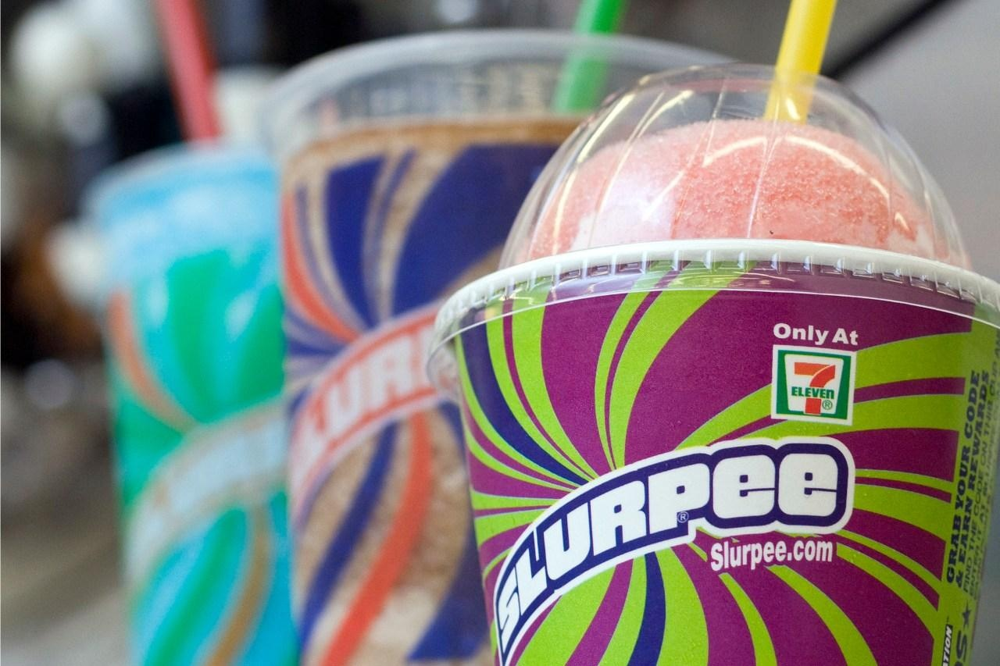

Get a free Slurpee at 7-Eleven on TuesdayStory at a glance - July 11 is the date that aligns with 7-Eleven’s name. - To mark the occasion, since 2002, the chain has offered a free small Slurpee drink. - Previously known as “7-Eleven Day,” the company started calling it “Slurpee Day” in 2022. ST. LOUIS (KTVI) – What’s better than a Slurpee on a hot summer day? A free Slurpee on a hot summer day. Every year since 2002, 7-Eleven has offered a complimentary small Slurpee drink on July 11: the date that aligns with the chain’s name (7/11). And on Tuesday, July 11, 2023, customers can once again enjoy their free small Slurpee at participating 7-Eleven, Speedway and Stripes locations. Previously known as “7-Eleven Day,” the company started calling it “Slurpee Day” in 2022. The decision to rebrand was driven by customer feedback and the longstanding association between the event and the chain’s signature frozen drink. The company, initially founded as the Southland Ice Company in Dallas, Texas, in 1927, underwent a transformation and rebranded as 7-Eleven in 1946. The name change was a reflection of the extended operating hours adopted by the stores, which opened from 7 a.m. to 11 p.m., seven days a week. 7-Eleven is the nation’s largest chain of convenience stores. There are also over 75,000 locations globally. Copyright 2023 Nexstar Media Inc. All rights reserved. This material may not be published, broadcast, rewritten, or redistributed. |
 |